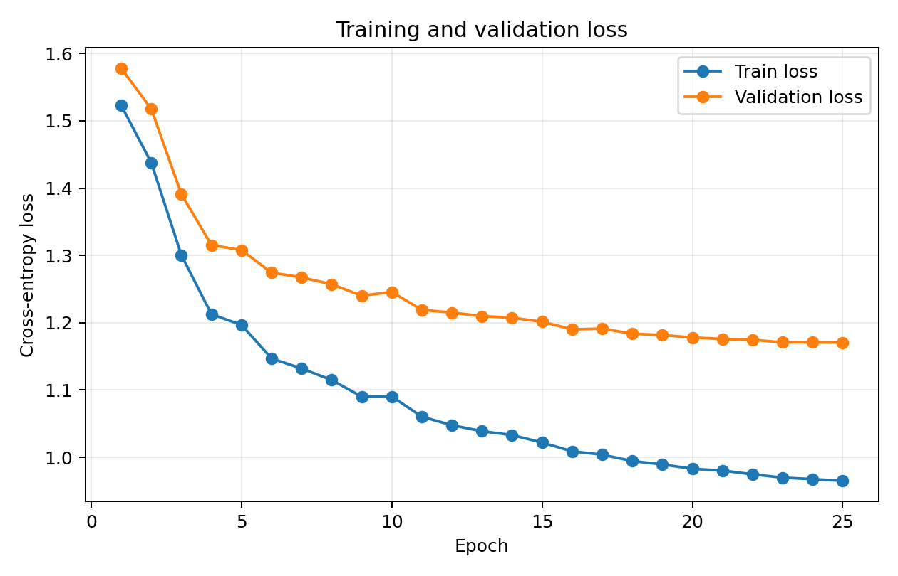
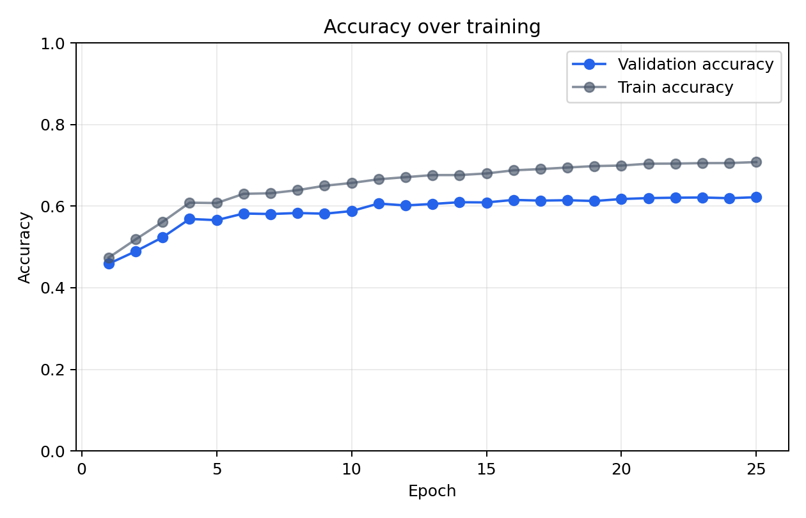
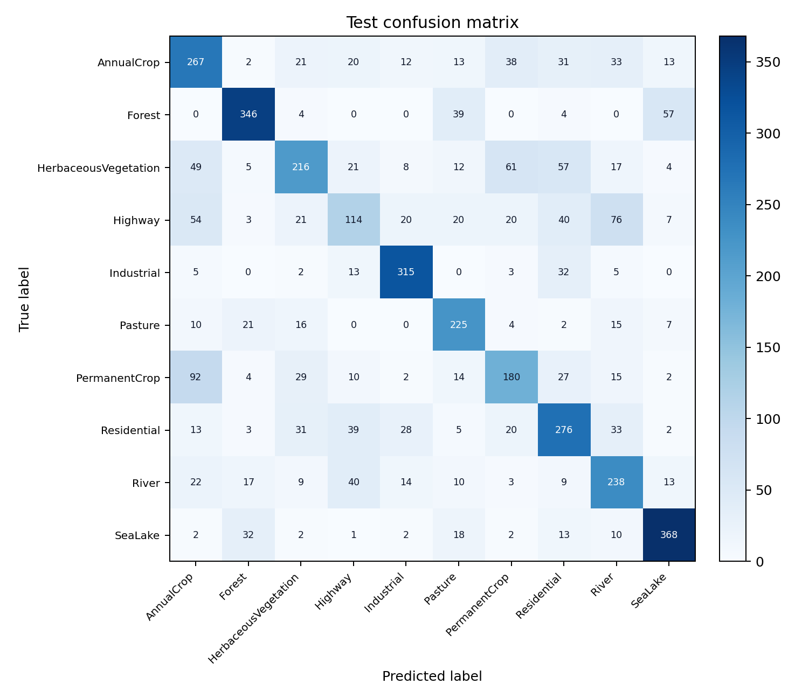
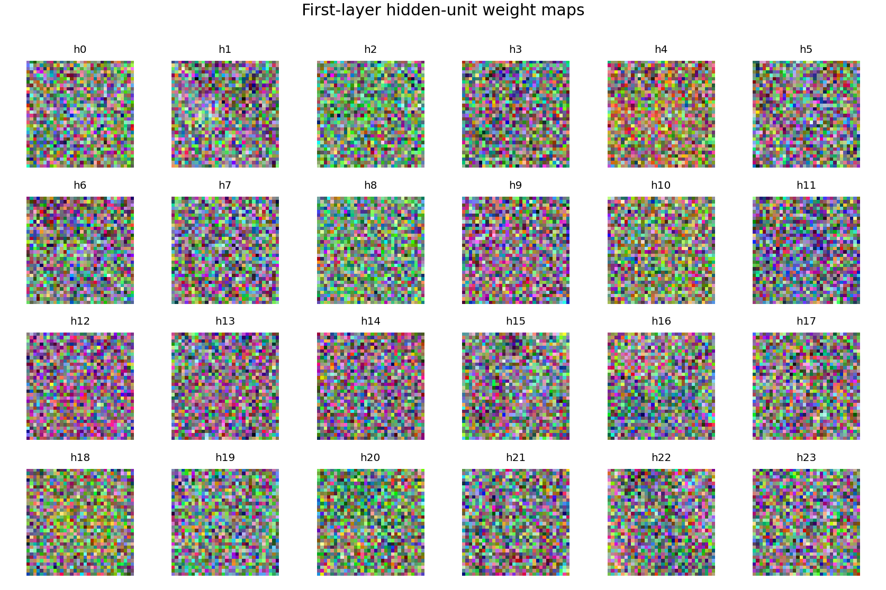
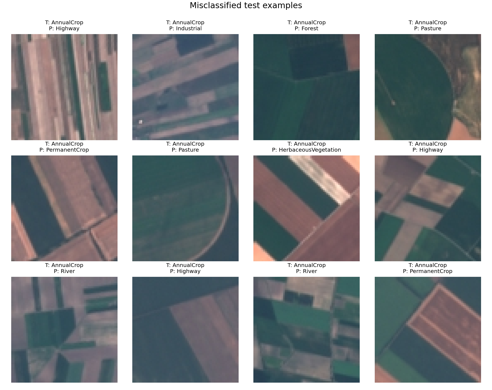

HW1：从零开始构建三层神经网络分类器，实现地表覆盖图像分类
本报告使用 NumPy 手工实现三层 MLP，在 EuroSAT RGB 数据集上完成土地覆盖分类。模型、损失函数、SGD、学习率衰减、L2 正则化、反向传播、超参数搜索、测试评估和可视化均由本项目代码完成。
1. 代码与提交链接
GitHub Repo：https://github.com/thrsev37/hw1-eurosat-mlp
模型权重下载地址：https://github.com/thrsev37/hw1-eurosat-mlp/raw/main/artifacts/best_model.npz
2. 数据集处理
EuroSAT_RGB 共包含 10 类遥感图像。本实验按类别进行分层切分：70% 训练集、15% 验证集、15% 测试集。图像统一缩放为 32 x 32，转换为 RGB 后展平为向量，并使用训练集均值和标准差进行标准化。
样本数：训练集 18900，验证集 4050，测试集 4050。
3. 模型与优化方法
模型结构为输入层、一个隐藏层和输出层：x -> Linear -> relu -> Linear -> Softmax。交叉熵损失使用稳定 Softmax 实现，Linear 层和激活函数都保存前向传播缓存并手工实现 backward。训练时使用 SGD 更新参数，并加入学习率指数衰减与 L2 正则化。
最终训练超参数：初始学习率 0.03，学习率衰减 0.92，Weight Decay 0.0005，Batch Size 256，训练轮数 25。最佳模型根据验证集准确率自动保存，最佳轮次为第 25 轮。
4. 超参数搜索
搜索阶段对隐藏层维度、激活函数、学习率和正则化强度进行网格搜索。为了控制时间成本，搜索使用每类样本上限；最终模型再使用完整设定训练。
| run | hidden_dim | activation | lr | weight_decay | best_val_acc | final_train_acc |
|---|---|---|---|---|---|---|
| 1 | 64 | relu | 0.03 | 0.0001 | 44.83% | 51.61% |
| 2 | 64 | relu | 0.03 | 0.0005 | 46.00% | 53.32% |
| 3 | 64 | relu | 0.05 | 0.0001 | 45.83% | 55.93% |
| 4 | 64 | relu | 0.05 | 0.0005 | 42.17% | 52.00% |
| 5 | 64 | tanh | 0.03 | 0.0001 | 42.67% | 48.46% |
| 6 | 64 | tanh | 0.03 | 0.0005 | 44.00% | 51.00% |
| 7 | 64 | tanh | 0.05 | 0.0001 | 43.50% | 50.00% |
| 8 | 64 | tanh | 0.05 | 0.0005 | 45.00% | 53.36% |
| 9 | 128 | relu | 0.03 | 0.0001 | 41.33% | 50.29% |
| 10 | 128 | relu | 0.03 | 0.0005 | 47.17% | 54.75% |
| 11 | 128 | relu | 0.05 | 0.0001 | 43.50% | 52.14% |
| 12 | 128 | relu | 0.05 | 0.0005 | 47.17% | 56.25% |
| 13 | 128 | tanh | 0.03 | 0.0001 | 45.00% | 51.96% |
| 14 | 128 | tanh | 0.03 | 0.0005 | 42.50% | 48.82% |
| 15 | 128 | tanh | 0.05 | 0.0001 | 46.50% | 54.29% |
| 16 | 128 | tanh | 0.05 | 0.0005 | 46.33% | 53.71% |
最优组合：{'run': '10', 'hidden_dim': '128', 'activation': 'relu', 'lr': '0.03', 'lr_decay': '0.92', 'weight_decay': '0.0005', 'best_val_acc': '0.4716666666666667', 'final_train_acc': '0.5475', 'artifact_dir': '/Users/cheese/Documents/Codex/2026-06-24/wan/outputs/hw1_solution/artifacts/search/run_10_h128_relu_lr0.03_wd0.0005'}
5. 训练过程可视化


6. 测试集结果
最佳模型在独立测试集上的 Accuracy 为 62.84%。混淆矩阵如下，行是真实类别，列是预测类别。

7. 第一层权重可视化与空间模式观察
将第一层权重矩阵的每个隐藏单元列向量恢复为 32 x 32 x 3 的 RGB 图像后，可以看到权重图整体较为高频、碎片化，只有少数隐藏单元表现出弱的绿色、蓝色或灰白颜色偏好。它们可能分别帮助模型捕捉植被、水体或建筑区域的全局颜色差异，但没有形成非常清晰、稳定的 “河流” 或 “森林” 局部空间模板。这与 MLP 将图像展平后再分类有关：模型缺少卷积网络的局部连接和平移共享先验，因此第一层权重更像点状颜色响应，而不是可解释的边缘或纹理检测器。

8. 错例分析
错例主要集中在视觉纹理或颜色接近的类别之间：Highway 与 River 都可能出现细长、连续、低纹理的线状结构；Pasture、AnnualCrop、PermanentCrop 与 HerbaceousVegetation 都包含大面积绿色或黄绿色植被纹理；Industrial 与 Residential 都有规则建筑块和道路网。MLP 只能基于展平后的全局像素模式分类，因此遇到尺度、方向和局部布局变化时更容易混淆。

9. 运行方式
python3 search.py --data-dir /Users/cheese/Downloads/hw1/EuroSAT_RGB
python3 train.py --data-dir /Users/cheese/Downloads/hw1/EuroSAT_RGB
python3 evaluate.py --data-dir /Users/cheese/Downloads/hw1/EuroSAT_RGB
python3 visualize.py --data-dir /Users/cheese/Downloads/hw1/EuroSAT_RGB
python3 make_report.py --github-url YOUR_REPO_URL --weights-url YOUR_DRIVE_URL